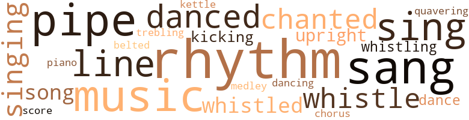
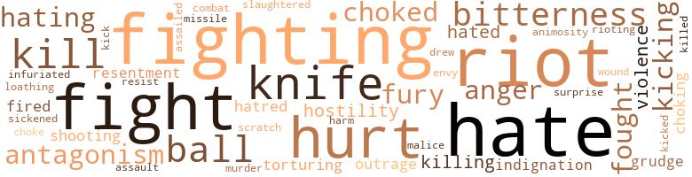

Behold a Cry, by Bland, Alden (1947)
84 music-related terms matched in this text.
Most frequent terms in this topic: rhythm (11); sang (9); music (8); sing (6); pipe (4)
belt_out.v.01
Definition: sing loudly and forcefully
| word | sentence |
|---|---|
| belted | The two spindly-legged boys , dressed in stove-pipe trousers and belted sack coats , stared for a moment with " timid curiosity and hung their heads . |
chorus.n.01
Definition: any utterance produced simultaneously by a group
| word | sentence |
|---|---|
| chorus | Their shouts , rising in a discordant chorus , seemed somehow detached from them . |
dance.n.01
Definition: an artistic form of nonverbal communication
| word | sentence |
|---|---|
| dance | Along the other side , running the length of the area , were rows of tables covered with white cloth stretching all the way to the small stage resting on the dance door . |
| dance | " Let 's dance , " Ed said to her . |
dance.v.02
Definition: move in a pattern; usually to musical accompaniment; do or perform a dance
| word | sentence |
|---|---|
| danced | Cleo 's laughter danced high above that of the men . |
dance.v.03
Definition: skip, leap, or move up and down or sideways
| word | sentence |
|---|---|
| danced | Dan danced delightedly . |
| Dancing | Dancing exaggeratedly from the heat of the sand , with painfully studied indifference , they headed for the water . |
| danced | It advanced , retreated , and danced nimbly about , playing a game , immersing everything in dream . |
| danced | He danced past the bandstand . |
kettle.n.04
Definition: a large hemispherical brass or copper percussion instrument with a drumhead that can be tuned by adjusting the tension on it
| word | sentence |
|---|---|
| kettle | Dan , holding the spout of the kettle over his back , poured a stream of water over his body . |
kick.v.04
Definition: kick a leg up
| word | sentence |
|---|---|
| kicking | Sam looked up at the rail load of kicking sheep . |
| kicking | Then he saw an arm move and a small splash as of someone kicking . |
medley.n.01
Definition: a musical composition consisting of a series of songs or other musical pieces from various sources
| word | sentence |
|---|---|
| medley | Mikals , Novaks , Hogans , Koches in a protesting medley of dialects . |
music.n.01
Definition: an artistic form of auditory communication incorporating instrumental or vocal tones in a structured and continuous manner
| word | sentence |
|---|---|
| music | . . . Wonder if that meat 's tender . . . Think I 'll quit buying my meat at Moe 's . . . That organ music is surely beautiful . . . Give me strength , Lord . . . Care for the weak . . . Show the sinners the way . . . She took Sam 's hand and held it tightly . |
| music | But he can spend five hours arguing and running from one place to another arid he 's happy . . . The music ended . |
| music | Sam heard the music , too ; but his mind roved afar . |
| music | . . . He never shackled no sheep . . . Never stuck one , neither , and watch it shiver all over and die . . . That organ music is sure pretty . . . When it makes them low notes , I can feel things shake , and it ai n't playing loud . . . Wonder why that is . . . He followed the music closely . |
| music | . . . He never shackled no sheep . . . Never stuck one , neither , and watch it shiver all over and die . . . That organ music is sure pretty . . . When it makes them low notes , I can feel things shake , and it ai n't playing loud . . . Wonder why that is . . . He followed the music closely . |
| music | He heard the music in men 's voices and wondered how it felt to be trouble-free . |
| music | Everywhere , there was laughter and goodfellowship against the background of lights and music . |
| music | Ed heard the music . |
piano.n.01
Definition: a keyboard instrument that is played by depressing keys that cause hammers to strike tuned strings and produce sounds
| word | sentence |
|---|---|
| piano | Meanwhile , the neighbors drifted - in through the open door - the women , most of whom had never been invited in , to examine the furniture , curtains , and the player piano ; the men , to gaze awestruck upon the ravages of violence . |
pipe.n.04
Definition: a tubular wind instrument
| word | sentence |
|---|---|
| pipes | The water knocked in the pipes , and she knew Mamie was drawing her bath . |
| pipes | Beyond , the shiny pipes of the plumber displayed in the front window . |
| pipes | Pots clattered , water poured in the sink , the fire in the iron stove roared up the pipes until the front lids glowed in translucent orange . |
| pipe | Sam struck a match against his shoe sole and held it against the bowl of his pipe . |
| pipe | The odor of strong coffee mixed with the smell of Sam 's pipe . |
| pipe | Sam soberly regarded the end of his pipe stem . |
| pipes | Some puffed nervously at their pipes , turning endlessly from one to the other . |
| pipe | Automatically , he lit his pipe and blew a huge mouthful of smoke at the ceiling . |
rhythm.n.04
Definition: the arrangement of spoken words alternating stressed and unstressed elements
| word | sentence |
|---|---|
| rhythm | As he honed his knife , Mamie 's name sprang out of the rhythm of the strokes . |
| rhythm | His heart beat in a heavy rhythm . |
| rhythm | Holding on to the banister , he swayed to and fro to the rhythm of the wagon . |
| rhythm | The seaweed undulated to some primeval rhythm . |
| rhythm | Ed ^ sat in closed-eyed ecstasy nodding his head in watchful rhythm while the black leather strop , swinging between his legs , shone liquid in the firelight . |
| rhythm | The rhythm of his voice and the warmth of the day seeped into Sam 's consciousness . |
| rhythm | From the dresser came the insistent rhythm of the clock . |
| rhythm | With the stability of guaranteed markets swept away , the tempo of the mighty change found its natural rhythm ; and the sound of its straining effort rumbled across country , leaving behind a trail of fears and anxieties . |
| rhythms | Overhead the rain beat in somnolent rhythms against the roofing . |
| rhythm | In the noiseless cycle of the universe came the new rhythm of growth . |
| rhythm | At the table he sat with the book propped against the glass water pitcher chewing his food with a slow expressionless rhythm , unaware of anyone , until Ed , unable to contain his spleen , astonished everyone when he burst out , " Put up that God-damn book ! " |
| rhythm | Even from the window , Son saw the gold chain bounding against his belly to the rhythm of his strides . |
score.n.02
Definition: a written form of a musical composition; parts for different instruments appear on separate staves on large pages
| word | sentence |
|---|---|
| score | " It seems a good time to these people to even up the score , to revenge themselves for the high wages they were forced to pay a year or two ago and see to it that such a wage scale never obtains again . |
sing.v.02
Definition: produce tones with the voice
| word | sentence |
|---|---|
| sing | There was a low note of outrage that made her heart sing . |
| sing | Son , coming along the walk with his second load of books , smiled to himself trying to recall the last time he heard her sing . |
| sing | We going to sing ! " |
| sang | In the front room before the range , with the fire dancing upon their faces , they sang . |
| sang | In weak , submissive tones alone , then together in wavering harmony , they sang . |
| sang | As Dan sang , a thin film of perspiration broke over his face and hands . |
| sang | He sang anxiously , careful of phrasing , with an eye on the strop . |
| sing | After a pause , the choir rose to sing . |
| sang | Reckon I 'll get over there soon . . . The choir sang . |
| sing | . . . Sounds pretty . . . They sing good . . . His fears settled . |
| sing | Rarely did she laugh and sing . |
| sang | " Ada from Decatur ... " the stickman sang . |
| sang | two in front and one behind ... " the stickman sang . |
| sang | All about him people laughed and sang , children played , untouched by the fear which forever attended him . |
| sang | He sang a song instead . |
singing.n.01
Definition: the act of singing vocal music
| word | sentence |
|---|---|
| singing | Already , she was sweeping and singing in the kitchen , estimating what furniture was needed and arranging it only to rearrange it . |
| singing | . . . Should have been in my own house from the start . . . She started singing in a low vbice . |
| singing | Yes , Clara had it right . . . That 's about the measure of it . . . The choir was singing . |
song.n.01
Definition: a short musical composition with words
| word | sentence |
|---|---|
| song | Long , warm days they were which she filled with work and song . |
| song | Gradually , she felt the ingratiating effects of their song . |
| song | He sang a song instead . |
tone.v.01
Definition: utter monotonously and repetitively and rhythmically
| word | sentence |
|---|---|
| chanted | Rags , old iron . . . rags , old iron . . . " he chanted in singsong imitation . |
| chanted | " No pay cuts ! " they chanted in unison . |
| chanted | The stick - man chanted monotonously . |
treble.v.01
Definition: sing treble
| word | sentence |
|---|---|
| trebling | But as Chicago swelled , the curving line of white rocks and pilings off which the Negroes dived was no longer adequate for a group trebling its size . |
tune.n.01
Definition: a succession of notes forming a distinctive sequence
| word | sentence |
|---|---|
| line | Separating them was a line , years old and imaginary , crossing the beach and reaching far out into the even surface of the lake . |
| line | Near the corner , Ed inched toward the buildings and stood in line watching the crowd . |
| line | There was no line of rickety buildings separated here and there by unweeded lots , no rambling fences with palings askew . |
| lines | Sitting well back from its spacious parvis , it rose sheer and challenging in long graceful lines , one of the four-square , unyielding forces for community stability and order . |
| lines | He saw it in the taut lines from the nose to the edge of her lips , in the steadfastness of her eyes . |
upright.n.02
Definition: a piano with a vertical sounding board
| word | sentence |
|---|---|
| upright | Phom swung her feet out from under the covers and sat upright in the blackness . |
| upright | They sat bolt upright . |
warble.v.01
Definition: sing or play with trills, alternating with the half note above or below
| word | sentence |
|---|---|
| quavering | The quavering throat muscles gave out their straining tones . |
whistle.v.01
Definition: make whistling sounds
| word | sentence |
|---|---|
| whistle | Dan heard his whistle in the kitchen . |
| whistled | His hands were thrust deeply in his pockets , and in low rushes through his clenched teeth , he whistled softly and monotonously . |
| whistling | The reckoning over , Ed came whistling in to supper . |
| whistled | The men stamped and whistled . " |
| whistle | " I 'll send right away , " he promised , shouting against the wheels and the whistle and the wind . . . Phom sat down to supper . |
| whistled | He whistled tunelessly in time with his strides . |
| whistle | She still counted as he passed the kitchen window and began to whistle loudly so that Cleo might hear . |
| whistling | Later , he went whistling quietly into the bedroom . |
192 violence-related terms matched in this text.
Most frequent terms in this topic: hate (21); fighting (19); fight (14); hurt (13); riot (11)
abhorrence.n.01
Definition: hate coupled with disgust
| word | sentence |
|---|---|
| loathing | Such pleasure as she recalled was overcome in loathing . |
abrasion.n.01
Definition: an abraded area where the skin is torn or worn off
| word | sentence |
|---|---|
| scratch | But you go on and scratch whatever 's itching you . |
anger.n.01
Definition: a strong emotion; a feeling that is oriented toward some real or supposed grievance
| word | sentence |
|---|---|
| Anger | Anger flushed him , but he smiled easily . |
| Anger | Anger swept the beach like contagion , jerking men to their feet , driving them into a tight , determined head . |
| Anger | Anger shook her . |
| anger | The plea in his tone gradually undermined her anger . |
animosity.n.01
Definition: a feeling of ill will arousing active hostility
| word | sentence |
|---|---|
| animosity | Ed 's animosity toward Joe slipped away . |
attack.v.01
Definition: launch an attack or assault on; begin hostilities or start warfare with
| word | sentence |
|---|---|
| assailed | As the days stretched into time , despair assailed him . |
battle.v.01
Definition: battle or contend against in or as if in a battle
| word | sentence |
|---|---|
| combat | She blinked her eyes unseeingly , trying to combat the feeling . |
butcher.v.01
Definition: kill (animals) usually for food consumption
| word | sentence |
|---|---|
| slaughtered | The handful of sheep which trickled into the pens was slaughtered within the first two hours . |
draw.v.23
Definition: pull (a person) apart with four horses tied to his extremities, so as to execute him
| word | sentence |
|---|---|
| drew | Phom drew up a chair and stared out at the street . |
envy.n.01
Definition: a feeling of grudging admiration and desire to have something that is possessed by another
| word | sentence |
|---|---|
| envy | Looking like butter would melt all over her , " she said with some envy . |
fight.n.02
Definition: the act of fighting; any contest or struggle
| word | sentence |
|---|---|
| fighting | They had a little ruckus on the beach . . . colored and white fighting with rocks . |
fight.n.05
Definition: a boxing or wrestling match
| word | sentence |
|---|---|
| fight | Wilson hurried home to his fatal fight with the Senate . |
| fights | On one side , fist fights began . |
| fight | Ai n't there no fight in you at all ? " |
| fights | A man gets mad and fights with his fists ; for us that 's the easiest way of all . |
| fight | . . . For me , it 's all fight . . . You got to snatch your bread right out from between their teeth . . . And you got to take your love where you can get it ! |
| fight | . . . If you fighting just for Negroes , it 's a lonesome fight , and I do n't see much chance . |
| fight | . . . Every major packing center in the nation will feel the weight of this fight ! " |
fight.v.02
Definition: fight against or resist strongly
| word | sentence |
|---|---|
| fight | All chances for her success rested upon her own resourcefulness and ability to fight . |
| fighting | He somehow found himself fighting , only half believing many of the things he said so confidently . |
| fighting | He fighting for what he believes in . |
| fought | Greek and Turk fought in Asia Minor . |
| fighting | The fighting slowed down , then stopped completely . |
| fighting | He sat abruptly on the top step fighting to control himself . |
| fighting | . . . You saw how everybody stop fighting when the kid went down . |
| fight | . . . One thing , " Ed said , " you sure will fight if you have to . . . " " I ai n't proud of it , " Sam said . |
| fight | . . . Certain amount of protection , certain rights . . . " " So you aim to fight big money with your bare hands ... It ai n't a job you want , it 's rights ! " |
| fighting | You ca n't get the feel of it right off ; but you ca n't lose sight of it , neither - do , and you right off fighting amongst yourselves again , dividing your strength . |
| fighting | The Irish and Germans is fighting the Poles and Lithuanians , and everybody 's hating the colored man - • Which means the company 's got good control . |
| fighting | We still fighting ourselves . . . " Ed turned on his side so that he could see Sam 's face . |
| fighting | Ai n't nobody but Phom and the kids . . . He climbed the stairs , fighting his way against the crowd , looking excitedly from face to face for a glimpse of them . |
| fought | So he fought them all . |
| fought | He fought the impulse to take her . |
| fighting | . . . Sure they her kids , not mine . . . I 'm out here fighting these white folks , getting mobbed , trying to make a decent living for them . . . What do I get out of it ? |
| fighting | . . . Must be packer money talking . . . Thing is too well organized . . . Everywhere we turn , this is the kind of stuff we get . . . Ca n't all be pure accident . . . It 's plain as the nose on your face . . . More Negroes hired , more money spent fighting unions . . . Fits just like a glove . . . We fighting big money with our bare hands . |
| fighting | . . . Must be packer money talking . . . Thing is too well organized . . . Everywhere we turn , this is the kind of stuff we get . . . Ca n't all be pure accident . . . It 's plain as the nose on your face . . . More Negroes hired , more money spent fighting unions . . . Fits just like a glove . . . We fighting big money with our bare hands . |
| fight | You got to fight them . |
| fight | " . . . Education helps you see the problem clear , helps you fight more better . . . " Sam insisted . |
| fighting | . . . If you fighting just for Negroes , it 's a lonesome fight , and I do n't see much chance . |
| fight | Why we got to fight and have riots ? " |
| fighting | There 's a shortage . . . White folks fighting to keep us from spreading out . |
| fighting | Everybody is fighting . . . The winner is the one who outsmarts the rest . |
| fight | We all poor , and everybody that 's poor got to fight together . |
| fight | He choked the impulse to strike out wildly and fight his way free . |
| fighting | Keeps me fighting myself as hard as him . |
| fight | ... A man 's got to learn to steel himself because he got to fight head on against the way folks feel . . . " Phom rose to leave . |
| fighting | Sensing where he was going , Tom hung back fighting and clawing desperately . |
| fought | Men fought and blood ran in the street , splattered against the walks , and puddled in muddy circles on the earth . |
| fighting | " Stop fighting it , boy . |
fury.n.01
Definition: a feeling of intense anger
| word | sentence |
|---|---|
| fury | They scratched in cold fury at the nicks in the surface of the rocks . |
| fury | I am sure you know the answers . . . " Sam 's fury mounted . " |
| fury | In a cold fury of analysis , she stripped him of his fine clothes and mannerisms . |
| fury | He understood their fury at the naked shame of the act . |
gag.v.06
Definition: cause to retch or choke
| word | sentence |
|---|---|
| choking | Men came up gasping , choking from the effort of long submergence . |
| choking | . . . A choking knot gave her no peace . |
| choked | For a moment he choked with excitement thinking he had found her . |
| choked | His throat choked . |
| choked | " Cut it out , " she choked . |
| choke | It filled her and began to choke . |
| choked | He choked the impulse to strike out wildly and fight his way free . |
grudge.n.01
Definition: a resentment strong enough to justify retaliation
| word | sentence |
|---|---|
| grudge | Might think you holding a grudge . |
| grudge | But I do n't bear him no grudge . |
hate.n.01
Definition: the emotion of intense dislike; a feeling of dislike so strong that it demands action
| word | sentence |
|---|---|
| hate | . . . Ai n't ready for no talking yet . . . Too much live hate in him . . . Once she peeked in , thinking he was asleep ; the light glistened in purple and red sparks on the tears in the corner of his eyes . |
| hatred | He knew now that Ed 's hatred was total . |
| hate | It glittered with hate . |
| hate | Ed forced his misery and hate upon them . |
| hate | " With white folks , it 's part hate and part fear . " |
| hate | White folks so high and mighty , they think race hate only works pne way ! |
| hatred | Ed saw their faces stiffen with hatred , saw the cordon about the entrance straining and heaving like some heavy tide at bay . |
hate.v.01
Definition: dislike intensely; feel antipathy or aversion towards
| word | sentence |
|---|---|
| hating | She found herself almost hating him . |
| hating | Every time she lifts a spoon , I 'm hoping it poisons her ... All the time , I 'm hating her ! |
| hated | Phom hated herself . |
| hating | The Irish and Germans is fighting the Poles and Lithuanians , and everybody 's hating the colored man - • Which means the company 's got good control . |
| hate | White folks really hate us ! |
| hate | ... I hate them ! |
| hate | . . . I hate that kind of a woman . . . He was afraid to guess how much she knew . |
| hate | All the while Dan said to himself , ... I hate them ! |
| hate | ... I hate them ! |
| hate | . . . Everything is so free when he 's gone ... I hate to see him come , things ai n't the same . . . In the kitchen , Clara bustled about , anxious to meet his every need . |
| hate | Well , then , why do white folks hate us ? |
| hate | And us , " Son continued , " should we hate them back ? " |
| hate | It 's wrong to hate , Son . " |
| hated | " But Eddie said he hated them . |
| hate | So they hate us . |
| hate | We hate them for mistreating us , holding us back . |
| hate | " I did n't hate Hilda . |
| hate | There 's more of them than us , they hate us . . . We scared , " Son recapitulated . |
| hated | Cleo hated him because she had submitted . |
| hate | . . . They do n't see that colored folks all divided up same as they is . . . Some like unions - some do n't . . . Some got money - some ai n't . . . Some hate white folks - some do n't . . . But white folks think everybody with a black skin is of the same mind . . . They packed against him , holding him in a vise . |
| hating | " All this hating ai n't got nothing to do with it ! " |
| hate | " I do n't hate nobody , " Joe said stubbornly . |
| hate | You do n't hate nobody ! |
hostility.n.01
Definition: a hostile (very unfriendly) disposition
| word | sentence |
|---|---|
| hostility | After each meeting with Mamie , Ed 's manner became more brusque , his hostility toward herself more apparent . |
| hostility | She spoke without hostility , without bitterness . |
| hostility | At times , Phom felt her actual hostility . |
hostility.n.02
Definition: a state of deep-seated ill-will
| word | sentence |
|---|---|
| antagonism | Mamie sat torn between antagonism and pity . |
| antagonism | A hard nub of antagonism settled and took root . |
| antagonism | At the sound of her voice , his antagonism quickly rose . |
| antagonism | His antagonism worked itself to a head . |
indignation.n.01
Definition: a feeling of righteous anger
| word | sentence |
|---|---|
| outrage | There was a low note of outrage that made her heart sing . |
| outrage | . . . He was crushed by a vague and indefinable sense of guilt mixed with outrage and shame . |
| indignation | His voice rang with indignation . |
| indignation | Hard bodies jostled each other as the men groped for words to relieve their indignation . |
infuriate.v.01
Definition: make furious
| word | sentence |
|---|---|
| infuriated | Her resistance infuriated him . |
injury.n.01
Definition: any physical damage to the body caused by violence or accident or fracture etc.
| word | sentence |
|---|---|
| hurt | Periodically , the old hurt , jealous feeling came in flow tide , but the length of time between gradually increased . |
| harm | " Aw , Tom did n't mean no harm , Ed , " Joe said . |
| hurt | . . . Maybe he ai n't even bad hurt . |
| hurt | She watched him twist in misery and hurt pride . |
| hurt | She turned her head to hide the hurt in her eyes . |
| hurt | He could n't separate his hurt from them as a group . |
| hurt | Step by step she sought to drive from her memory the hurt of that first day when she read his shame of them in Eddie 's eyes . |
| hurt | . . . We must a been a sight . . . She temporized laughingly , but the hurt was there quietly building and gathering to itself the fortitude of new hurts and bitternesses . |
kick.v.04
Definition: kick a leg up
| word | sentence |
|---|---|
| kicking | Sam looked up at the rail load of kicking sheep . |
| kicking | Then he saw an arm move and a small splash as of someone kicking . |
kick_back.v.02
Definition: spring back, as from a forceful thrust
| word | sentence |
|---|---|
| kick | Some of us got the church , others drink and kick up . |
| kicking | The table went down kicking its legs in the air . |
| kicked | Abruptly , he stopped and kicked a tin can . |
| kicking | " Well , what you kicking about ? " they heard him ask . |
kill.v.10
Definition: cause the death of, without intention
| word | sentence |
|---|---|
| kill | Ai n't many women got the patience to put up with all his ways . . . He ca n't stand responsibility because it cuts in on his good time ... He ai n't happy unless his friends see him walking with some woman all dolled up and dressed to kill . . . One night he left the house , and she stuck her head out of the window just in time to overhear two men talking below . |
| killed | " Only that you might get killed . |
| kill | " Sometimes you could kiss them , and sometimes you could kill them . " |
| killing | I could try harder to please her . . . But there 's so much she do n't understand . . . She ai n't had to hit a lick at a snake in her life , just make me a home . . . She do n't know what it means to be scared . . . Scared you going to get fired . . . Scared you going to lose your job . . . Scared you going to get sick . . . Scared you ca n't keep up that killing pace they put on you . . . She never seen men fall out from overwork , come back the next day , and find another man in they place . . . Never seen the look in a man 's eyes when his support is gone and he thinks about the mouths waiting to be fed at home ... If she could , then unions might mean something . . . Wonder how it 's all going to end ? |
| killing | Earnest , industrious men drawn from Europe 's countrysides and towns to the sprawling yards and killing floors of the nation 's largest industry . |
| kill | I had to get over wanting to kill him over things he did , before I could see him like I do now ... for the first time . . . Guess some folks would say that 's the same as not caring . . . " Clara did n't answer . |
| kill | " If I find them , I 'll kill them , " he said quietly . |
| kill | I 'll kill them ! |
| kill | Neither could he kill the excitement which shook him whenever Mamie was near . |
killing.n.02
Definition: the act of terminating a life
| word | sentence |
|---|---|
| killing | On the killing floor , the whites and blacks worked together as usual . |
knife.n.02
Definition: a weapon with a handle and blade with a sharp point
| word | sentence |
|---|---|
| knife | As he honed his knife , Mamie 's name sprang out of the rhythm of the strokes . |
| knife | On the other end of the platform , Joe tightened his apron and adjusted the guard on his knife hand . |
| knife | We knife men , ai n't we ? |
| knife | And knife men is supposed to join the Butchers ' . |
| knife | Twisting the heads with one hand , Ed slid his double-edged knife into the soft spot by the ear . |
| knife | At dinner , the grinding noise of Son chewing or Dan sawing awkwardly with his knife kept him on edge . |
| knife | He listened to Son crush the food between his teeth , to Dan grate his knife against the bottom of the plate . |
| knife | Dan 's knife rasped against his plate . |
malice.n.01
Definition: feeling a need to see others suffer
| word | sentence |
|---|---|
| malice | ... I know that boy likes me , she said to herself . . . Phom knows it too . . . She have a spasm every time he smiles at me . . . She squints them little eyes of hers , and her face gets stiff as a board . . . Mamie laughed inwardly , relishing her malice . |
murder.n.01
Definition: unlawful premeditated killing of a human being by a human being
| word | sentence |
|---|---|
| murder | The streetcar and elevated strike loomed , sharing the headlines with the abduction and murder of little Janet Wilker-son . |
musket_ball.n.01
Definition: a solid projectile that is shot by a musket
| word | sentence |
|---|---|
| ball | The sun was an ominous ball , but the quiet water lapped peacefully . |
| ball | Ed felt the tickle of a lone ball of sweat inching down the side of his head . |
| balls | A thin film of dust and occasional balls of down covered the floor . |
| balls | Small balls of sweat stood upon his forehead . |
| balls | The three balls of the loan shark , signs suspended overhead from iron rods , jutted out above the many-footed crowd . |
open_fire.v.01
Definition: start firing a weapon
| word | sentence |
|---|---|
| fired | Vainly , the police battered with billies and fired into the angered mob . |
| fired | A shot was fired . |
pain.v.02
Definition: cause emotional anguish or make miserable
| word | sentence |
|---|---|
| hurt | Phom realized that his pride was being hurt . |
| hurt | . . . Sure wo n't hurt him , none , either ... From now on , things going to be different . . . Too much of him getting what he wants when he wants it ! |
| hurt | . . . Hell , what they do n't know do n't hurt . |
| hurt | We know wrong is wrong , and right do n't hurt nobody . . . " . . . Why she got to hint , Phom wondered . . . Why do n't she come on out and say what 's on her mind ? |
| hurt | You still my baby , " she told him while she stroked his head in the spot where he had been hurt . |
| hurt | I 'm always home . . . " The admission hurt her pride . |
projectile.n.01
Definition: a weapon that is forcibly thrown or projected at a targets but is not self-propelled
| word | sentence |
|---|---|
| missile | Here and there a missile was thrown . |
rape.n.03
Definition: the crime of forcing a woman to submit to sexual intercourse against her will
| word | sentence |
|---|---|
| assault | As Son watched , the white men spread out to wait for the assault . |
resentment.n.01
Definition: a feeling of deep and bitter anger and ill-will
| word | sentence |
|---|---|
| bitterness | Even if she is here , it wo n't make no difference between us . . . Mamie struggled to feel she was winning a victory over Phom , using this feeling as a bulwark against the bitterness of accepting her as his wife . |
| bitterness | Phom probed deeply into her feelings toward Mamie , trying desperately to see around the mountain of bitterness which she knew was there . |
| bitterness | He caught the bitterness in her voice . |
| bitterness | She spoke without hostility , without bitterness . |
| resentment | They swarmed over the cobbles , raucous , demanding , their resentment already boiling . |
| resentment | The unspoken criticism aroused resentment in him . |
resist.v.04
Definition: withstand the force of something
| word | sentence |
|---|---|
| resist | His ability to resist was puny in the face of such overwhelming strength . |
riot.n.01
Definition: a public act of violence by an unruly mob
| word | sentence |
|---|---|
| riots | The bread riots broke out in Italy . |
| riots | Race riots flared up and died . |
| riots | It denied that riots were sporadic and unrelated . |
| riot | . . . By evening , the riot burst violently . |
| riot | You do n't pay no mind to the riot we having . |
| riots | They mob you in riots . |
| riot | " Because after the riot , look like unionism is going plumb to hell . |
| riot | But I found out one thing from this riot . |
| riot | Since they brought him home in the riot , things been different . |
| riot | Immediately after the riot he and Son held long conversations , and a momentary communion wavered between them . |
| riots | What did you learn from the riots ? |
| riots | And when the riots were over , how many of you still had jobs to go back to ? |
| riot | The riot ai n't helped things none . . . Faintly , he heard the Reverend speaking . |
| riot | Something in what he said took Son 's mind back to Ed 's bedroom on the day after the riot . |
| riots | Why we got to fight and have riots ? " |
| riots | " I asked him what made riots . |
| riot | " Before the riot , it did n't make no difference to me one way or the other , union or no . . . But , you see , I know who give me this ... " Ed pointed at his jagged teeth . " |
| riot | " You niggers got away in the riot . . . but it wo n't happen again ! " |
| riot | They have been paraded to provoke riot . |
rioting.n.01
Definition: a state of disorder involving group violence
| word | sentence |
|---|---|
| rioting | It further prophesied more widespread rioting was to be expected . |
shooting.n.02
Definition: killing someone by gunfire
| word | sentence |
|---|---|
| Shooting | Shooting and Indians . |
| shooting | To him , the crowd seemed oblivious of the police who dived into their midst swinging dubs and shooting into the air . |
sicken.v.04
Definition: make sick or ill
| word | sentence |
|---|---|
| sickened | His heart sickened with disgust . |
storm.v.05
Definition: attack by storm; attack suddenly
| word | sentence |
|---|---|
| surprise | Maybe I 'll surprise them . |
torment.v.01
Definition: torment emotionally or mentally
| word | sentence |
|---|---|
| torturing | If he ai n't here by then , I 'll know . . . Again came the torturing sound of the trolley . |
| Torturing | Torturing herself with her own failure , she reconstructed the whole scene and mentally acted out a more lavish role which would allow her to feel proud of herself . |
violence.n.01
Definition: an act of aggression (as one against a person who resists)
| word | sentence |
|---|---|
| violence | He could n't hear their voices , but he saw their expressions of grim intent , read the violence in their gestures . |
| violence | Nor did she yield before the violence in Phom 's eyes . |
| violence | Meanwhile , the neighbors drifted - in through the open door - the women , most of whom had never been invited in , to examine the furniture , curtains , and the player piano ; the men , to gaze awestruck upon the ravages of violence . |
wound.n.01
Definition: an injury to living tissue (especially an injury involving a cut or break in the skin)
| word | sentence |
|---|---|
| wound | Her arms wound like wire about his body . |
36 religion-related terms matched in this text.
Most frequent terms in this topic: church (11); God (6); devil (5); preacher (4); chanted (3)
church.n.02
Definition: a place for public (especially Christian) worship
| word | sentence |
|---|---|
| church | Come Sunday , we going to church . |
| church | ... And on Sundays she sits up in church so sanctimonious . |
| church | Some of us got the church , others drink and kick up . |
| church | . . . Ten minutes in church and he 's restless ! |
| church | Clara closed her mind to the people about her , to the church , and to Sam . |
| church | . . . Mr. Crawley say this is the biggest church on the Southside , biggest congregation . . . His mind rambled on . |
| church | . . . Maybe I could come to church a little more . . . She always asking me . . . Might even join , someday . . . Reverend Smith ai n't no worse than the others . . . He do n't like unions . . . The Reverend approached the pulpit . |
| church | . . . Seems like any fool could see that . . . . . . No wonder , Sam was thinking . . . No wonder Ed , Joe , and the rest of them feel like they do . . . They go to church and hear this talk , they read the papers and there it is again . . . They do n't know what a union stands for . . . They think it 's a secret society or something . . . They leery of that , too . . . When they talk amongst each other , ai n't nobody there to straighten out the wrong ideas , nobody they got any confidence in . |
| church | Ed 's the only one he 'll listen to ... It ai n't too late , yet . . . WHILE Sam and Clara were in church , Ed climbed the three concrete steps to Joe 's house . |
church.n.04
Definition: the body of people who attend or belong to a particular local church
| word | sentence |
|---|---|
| church | " Are you attached to any church yet , Mrs. Tyler ? " |
| church | UNITY CENTER was a huge gray stone Baptist church sumptuously anchoring the corner of two busy intersections . |
god.n.03
Definition: a man of such superior qualities that he seems like a deity to other people
| word | sentence |
|---|---|
| God | By God , man , do n't you never think about nothing else ? " |
| God | " For God 's sake , what would you do with them ? " |
| God | I swear to God I tried to stop ! " |
| God | Let 's talk straight on this thing so we can tell what 's what ... " " For God 's sake , woman , what is it ? " |
| God | God gives a man times like these when you got to have a deep mind . . . " Ed searched for something to say , yearned to show his sympathy and understanding . |
| God | God made you like you is . |
hell.n.01
Definition: any place of pain and turmoil
| word | sentence |
|---|---|
| hell | . . . Ai n't been no getting along since she been here . . . Fussing like hell about Mamie ... So she fuss like hell . |
imitation.n.01
Definition: the doctrine that representations of nature or human behavior should be accurate imitations
| word | sentence |
|---|---|
| imitation | Rags , old iron . . . rags , old iron . . . " he chanted in singsong imitation . |
| imitation | Laboriously , Dan removed his shoes , grunting loudly in imitation of Ed . |
preacher.n.01
Definition: someone whose occupation is preaching the gospel
| word | sentence |
|---|---|
| preacher | We sure got a good preacher . |
| preacher | " I 'm hoping he 'll grow up to be a lawyer or a preacher , something fine ! " |
| preacher | Here I am sitting up all innocent-looking and I just got through fixing so me and the union organizer can see the preacher after services . . . And she busy thinking what he say up there might change my mind . . . His maneuvering pleased him . |
| preacher | . . . How can a preacher know about these things ? |
religion.n.01
Definition: a strong belief in a supernatural power or powers that control human destiny
| word | sentence |
|---|---|
| religion | It 's a regular religion with you . |
| faith | You got to take so much of it on faith . . . And she ai n't got any . |
satan.n.01
Definition: (Judeo-Christian and Islamic religions) chief spirit of evil and adversary of God; tempter of mankind; master of Hell
| word | sentence |
|---|---|
| devil | " What you want now , you little devil ? " she asked , scrambling to her feet in embarrassment . |
| devil | " Comes the devil , " Phom muttered tersely . |
| devil | Seven it is __ The devil caught him . |
| devil | The devil caught him . |
| devil | Again , Big Jim threw " Seven it is . . . And the devil caught him . |
sermon.n.02
Definition: a moralistic rebuke
| word | sentence |
|---|---|
| sermon | '' Well , how did you like the sermon ? " |
tone.v.01
Definition: utter monotonously and repetitively and rhythmically
| word | sentence |
|---|---|
| chanted | Rags , old iron . . . rags , old iron . . . " he chanted in singsong imitation . |
| chanted | " No pay cuts ! " they chanted in unison . |
| chanted | The stick - man chanted monotonously . |
worship.n.01
Definition: the activity of worshipping
| word | sentence |
|---|---|
| worship | You really believe that stuff . . . But then , what you saying is how you want to be a big shot , want a woman to worship you , want a good time , clothes and a free head . . . It 's in every word you say . |